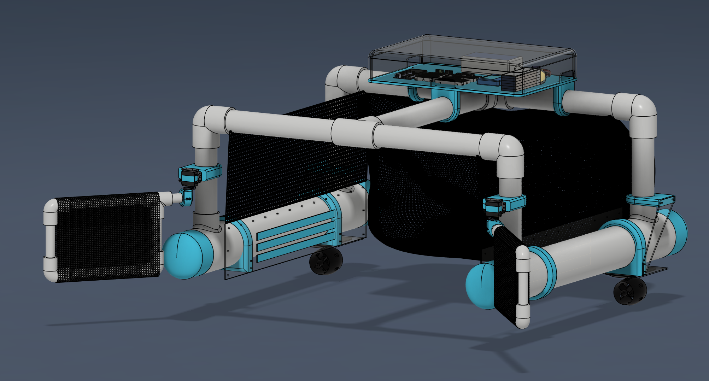

what's up!
I'm Darsheel Paila, a sophomore at the School of Science and Engineering. I build where mechanical engineering, design, and sustainability meet: from myoelectric prosthetics and competition robotics to kinetic sculpture and CFD-driven clean energy.